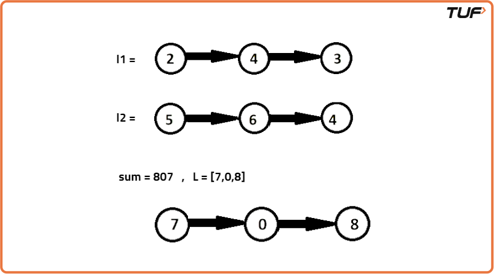
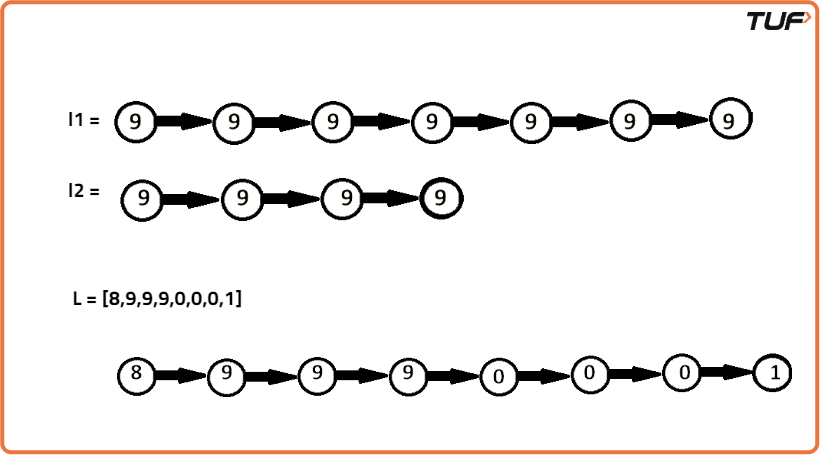
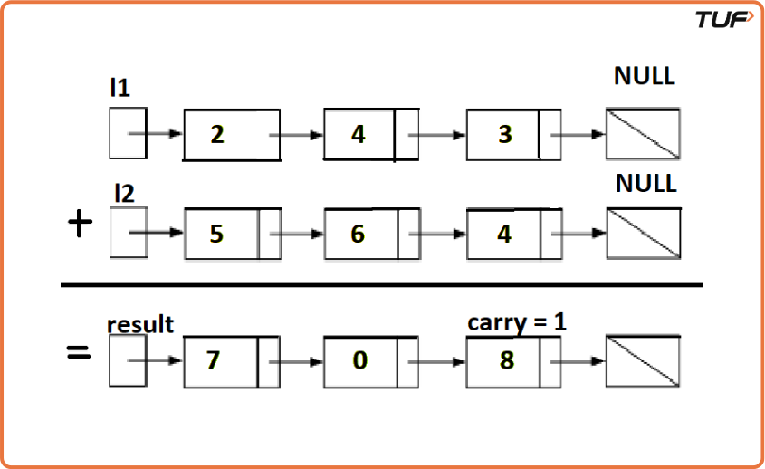

Add two numbers represented as Linked Lists
Problem Statement: Add two numbers represented as Linked Lists.
Examples
Example 1: Input: num1 = 243, num2 = 564 Output:sum = 807; L = [7,0,8]
Explanation: Since the digits are stored in reverse order, reverse the numbers first to get the or original number and then add them as → 342 + 465 = 807. Example 2: Input: l1 = [9,9,9,9,9,9,9], l2 = [9,9,9,9] Output: Result: [8,9,9,9,0,0,0,1]
Explanation: Since the digits are stored in reverse order, reverse the numbers first to get the original number and then add them as → 9999999 + 9999 = 8999001. Refer to the image below.
Disclaimer: Here is the practice link to help you assess your knowledge better. It's highly recommend trying to solve it before looking at the solution.
Approach
Algorithm
- Create a dummy node that will act as the starting point of the new linked list.
- Create a temporary pointer and set it to the dummy node.
- Start with a carry value of 0.
- Loop through both linked lists until you reach the end of both, or until there is no carry left.
- At each step, add the values of the current nodes and the carry.
- Update the carry by dividing the total by 10.
- Create a new node with the last digit of the total (total % 10) and attach it to the next of the temporary pointer, then move the temporary pointer forward.
- Move both list pointers to their next nodes.
- After the loop ends, return the next node of the dummy (this is the head of the result list).
- The dummy node is used to make the code easier. Without it, extra conditions would be needed to handle the first node.

Code
#include <bits/stdc++.h>
using namespace std;
// Definition for singly-linked list.
struct ListNode {
int val;
ListNode *next;
ListNode() : val(0), next(nullptr) {}
ListNode(int x) : val(x), next(nullptr) {}
ListNode(int x, ListNode *next) : val(x), next(next) {}
};
class Solution {
public:
ListNode* addTwoNumbers(ListNode* l1, ListNode* l2) {
//Initialize a dummy node as a new node
ListNode *dummy = new ListNode();
ListNode *temp = dummy;
//Carry will be carried to the next new node created
int carry = 0;
//Iterate till the end of both the lists
while( (l1 != NULL || l2 != NULL) || carry) {
int sum = 0;
if(l1 != NULL) {
sum += l1->val;
l1 = l1 -> next;
}
//Repeat the same process for l2 as l1
if(l2 != NULL) {
sum += l2 -> val;
l2 = l2 -> next;
}
//Carry gets added to sum in the node (carry=sum/10)
sum += carry;
carry = sum / 10;
ListNode *node = new ListNode(sum % 10);
temp -> next = node;
temp = temp -> next;
}
return dummy -> next;
}
};
ListNode* createList(vector arr) {
ListNode *head = new ListNode(arr[0]);
ListNode *temp = head;
for (int i = 1; i < arr.size(); i++) {
temp->next = new ListNode(arr[i]);
temp = temp->next;
}
return head;
}
// Helper to print a linked list
void printList(ListNode* head) {
while (head) {
cout << head->val;
if (head->next) cout << " -> ";
head = head->next;
}
cout << endl;
}
int main() {
vector num1 = {2, 4, 3}; // represents 342
vector num2 = {5, 6, 4}; // represents 465
ListNode* l1 = createList(num1);
ListNode* l2 = createList(num2);
Solution sol;
ListNode* result = sol.addTwoNumbers(l1, l2);
printList(result); // Output: 7 -> 0 -> 8
return 0;
}
Complexity Analysis
Time Complexity: O(max(m,n)). Assume that m and n represent the length of l1 and l2 respectively, the algorithm above iterates at most max(m,n) times.
Space Complexity: O(max(m,n)). The length of the new list is at most max(m,n)+1.